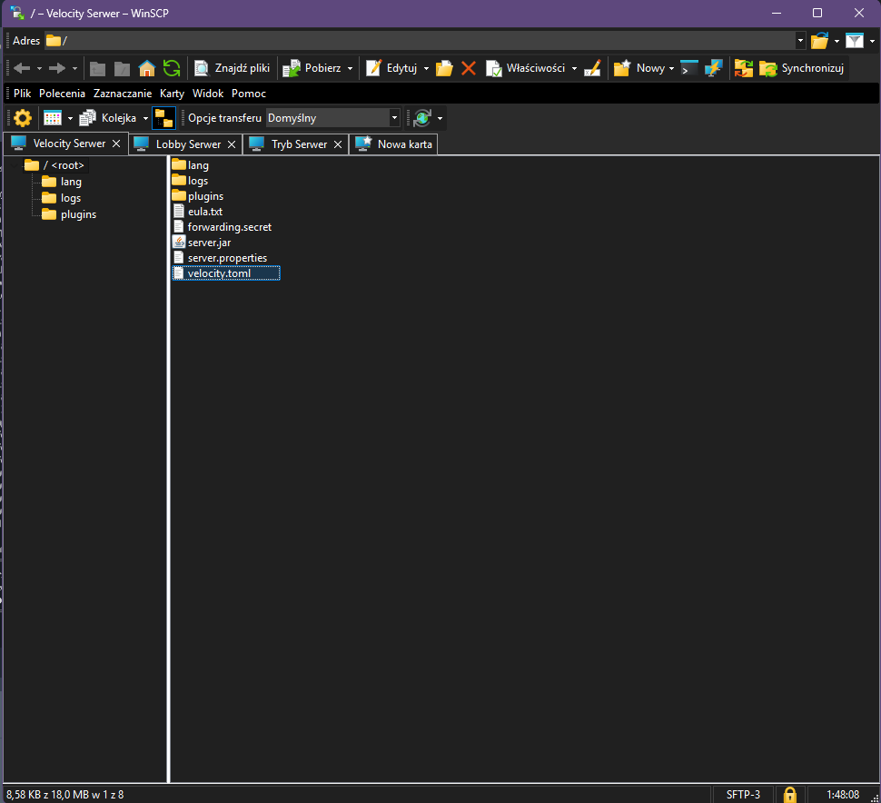
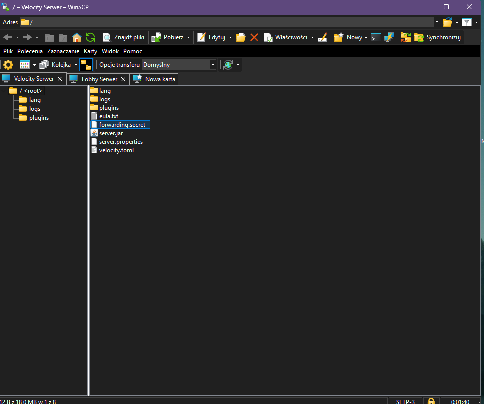
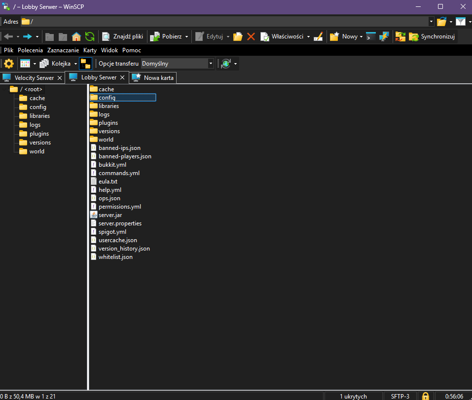
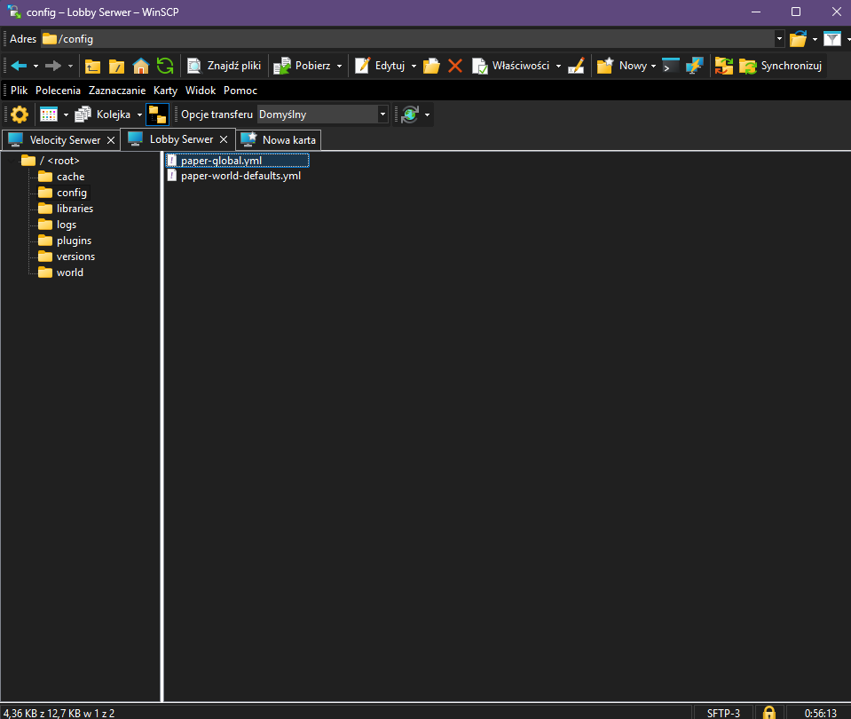
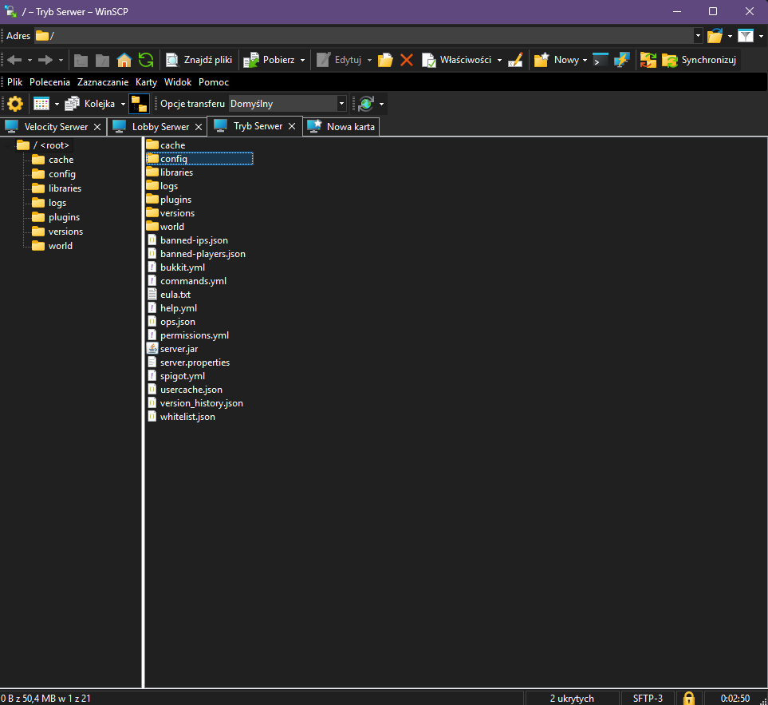

⚡ Serwer 1 – Velocity (proxy) – 1 GB RAM / 1–2 rdzenie CPU
🏠 Serwer 2 – Lobby – 2–4 GB RAM / 2 rdzenie CPU
🎮 Serwer 3 – Tryb – 4–8 GB RAM / 2–4 rdzenie CPU
Zaczynamy od wejścia w przeglądarkę i pobrania silnika Velocity ze strony papermc.io
Po pobraniu pliku zmieńmy jego nazwę na server.jar, aby serwer nie miał problemu z odczytaniem silnika.
Teraz przerzućmy plik na serwer do głównego katalogu.
Restartujemy serwer.
Po restarcie zobaczymy pliki na serwerze. Kierujemy się do pliku velocity.toml

bind = "0.0.0.0:25565"
To ustawienie odpowiada za adres i port, na którym działa proxy. Dzięki temu możesz zmienić port serwera albo wskazać konkretny adres IP, jeśli masz ich kilka.
0.0.0.0 oznacza po prostu, że serwer działa na wszystkich dostępnych adresach IP na maszynie.
Zalecane: Jeśli masz własne IP, możesz zostawić 0.0.0.0:25565 Jeśli korzystasz z hostingu, wpisz port, który dostałeś od dostawcy.
Autoryzacja graczy z serwerami Microsoftu
online-mode = false
Wyłączenie tej opcji pozwala dołączać graczom z piracką wersją gry (tzw. „non-premium”). Może to jednak otworzyć luki w bezpieczeństwie, np. botowanie.
Dodatkowo ustawiamy:
force-key-authentication = false, ponieważ jest to system uwierzytelniania gracza przez Microsoft i w niektórych konfiguracjach może powodować problemy.
Zalecam później dodanie pluginów takich jak: system logowania oraz anty-bot dla bezpieczeństwa serwera.
Przechodzimy do player-info-forwarding-mode i ustawiamy MODERN.
Jeśli serwer obsługuje tylko wersje 1.13+, używamy MODERN, jeśli starsze wersje – BUNGEEGUARD.
Przechodzimy do sekcji servers, tutaj przypisujemy adresy IP naszego lobby oraz trybu.
Możemy usunąć dwa pozostałe wpisy dodane domyślnie przez Velocity, ponieważ nie będą nam potrzebne.
Adres 127.0.0.1:30066 podmieniamy na adres IP naszego drugiego serwera, czyli Lobby.
Dla lepszego zobrazowania działania Velocity zmieńmy nazwę naszego lobby na drzwi.
Wyobraź sobie, że chcąc wejść na serwer, najpierw musimy przejść przez proxy.
Działa to podobnie jak wejście do pokoju — najpierw musimy przejść przez drzwi, inaczej nie dostaniemy się do środka.
W naszym przypadku rolę tych drzwi pełni właśnie serwer lobby.
Słowo lobby zamieńmy wszędzie pod spodem na słowo drzwi. Po tym zapisujemy konfiguracje pliku i możemy zamknąć.
Z listy plików szukamy forwarding.secret i otwieramy.

Po przejściu do pliku ujrzymy zawartość - specjalny token który musimy skopiować.
Teraz przechodzimy do listy plików na naszym drugim serwerze lobby.
Najlepiej będzie gdy zainstalujemy sobie klasycznego Paper na najnowszej wersji.
Wchodzimy w folder config → paper-global.yml → przechodzimy do zawartości pliku i szukamy sekcji "velocity".
Ustawiamy:
enabled: true
online-mode: false
secret: 'token' (tutaj zwróćmy uwagę, aby token poprawnie umieścić między apostrofami)


Po zapisaniu konfiguracji wróćmy do głównego katalogu do pliku server.properties i zmieńmy także online-mode=false.
Następnie możemy zrestartować obydwa serwery.
Przechodzimy do listy serwerów i dodajmy serwer proxy, gdy konfiguracja przeszła poprawnie powinno nas przerzucić do serwera lobby.
Co gdyby nie udało się dołączyć a serwer dawał by informację zwrotną:
Unable to connect you to lobby. Please try again later. ???
Mamy różne możliwości rozwiązania:
1. Sprawdź czy poprawnie podałeś IP serwera lobby.
2. Sprawdź czy serwer lobby poprawnie się uruchamia i nie wywala błędów.
3. Jeśli korzystasz z różnych dostawców (np. 1 serwer u innego dostawcy, 2 u innego) dowiedz się czy nie blokują oni połączeń między serwerami.
4. Sprawdź czy poprawnie wpisałeś token w konfiguracji.
Teraz możemy zająć się dodaniem trybu do naszego serwera lobby.
Przykladowo będę chcial stworzyć tryb survival, ale może to być dowolny tryb, który chcesz dodać.Pobierzmy plugin FancyNPCs i wrzućmy go do folderu plugins na serwerze lobby, a następnie restartujemy serwer.
Wchodzimy na serwer i wpisujemy komendę: /npc create Tryb
Po utworzeniu NPC wpisujemy następną komendę: /npc action Tryb ANY_CLICK add send_to_server survival
Teraz wróćmy do listy plików na serwerze proxy i kierujemy się ponownie do pliku velocity.toml do sekcji servers.
Wprowadzamy tryb do konfiguracji: survival = "ip naszego trzeciego serwera"
Zapisujemy i idziemy do listy plików na serwerze z trybem.
Tutaj ponownie najlepiej będzie gdy zainstalujemy sobie klasycznego Paper na najnowszej wersji.
Wchodzimy w folder config → paper-global.yml → przechodzimy do zawartości pliku i szukamy sekcji "velocity" i ustawiamy tak jak w kroku 13.

Dotarliśmy do końca poradnika. Teraz możemy zrestartować wszystkie trzy serwery.
Wchodzimy na serwer i pojawia nam się nasz NPC — klikamy i gotowe!
Poniższe ustawienia nie są wymagane do poprawnego działania sieci, jednak w wielu przypadkach mogą przynieść dodatkowe korzyści wydajnościowe. Warto je rozważyć, jeśli Twoja infrastruktura spełnia opisane warunki.
tcp-fast-open – Velocity
Opcja ta może skrócić czas nawiązywania połączenia pomiędzy graczem a serwerem proxy. Największe korzyści daje na systemach opartych o Linux.
Zalecana wartość: true
Wymaganie: proxy musi działać na systemie Linux.
network-compression-threshold – server.properties
Jeżeli serwer gry i proxy znajdują się na tej samej maszynie, dodatkowa kompresja pakietów po stronie serwera zwykle nie jest potrzebna. Dane trafiają najpierw do proxy, które może przejąć ten proces.
Pozostaw domyślną konfigurację, jeśli serwer i proxy działają na oddzielnych maszynach.
Zalecana wartość: -1
Wymaganie: serwer gry i proxy muszą działać na tym samym hoście.
LuckPerms – Popularny system zarządzania grupami, rangami oraz uprawnieniami graczy.
FastMOTD – Rozszerza możliwości konfiguracji MOTD.
CommandWhitelist – Umożliwia ograniczanie dostępu do wybranych komend na podstawie uprawnień lub rang.
AjQueue / LimboQueue – Pluginy odpowiedzialne za obsługę kolejek podczas dołączania graczy na serwery.
LibertyBans – Zaawansowany system administracyjny do nakładania banów, mute'ów oraz innych kar.
LimboReconnect – Pozwala utrzymać graczy na sieci podczas restartów lub chwilowej niedostępności backendów.
EnhancedVelocity – Zbiór niewielkich usprawnień i dodatkowych funkcji poprawiających komfort administracji.
VLobby – Dodaje komendę /lobby, umożliwiając szybki powrót do lobby.
Instaluj tylko te pluginy, które są faktycznie potrzebne. Sam Velocity jest bardzo wydajny, jednak nadmiar dodatków może negatywnie wpłynąć na stabilność i wykorzystanie zasobów.